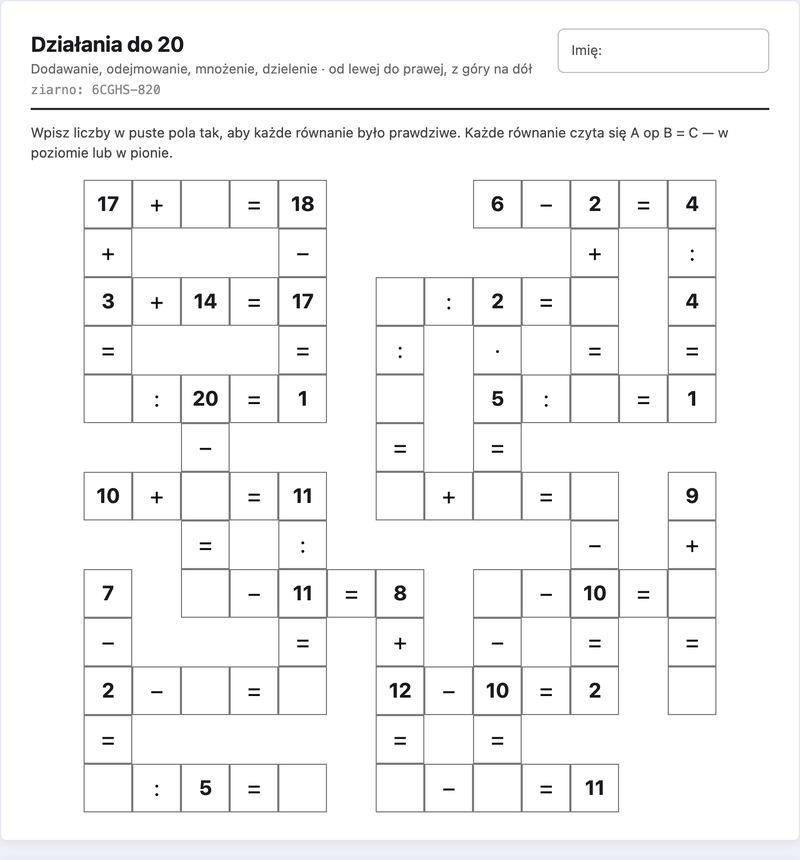
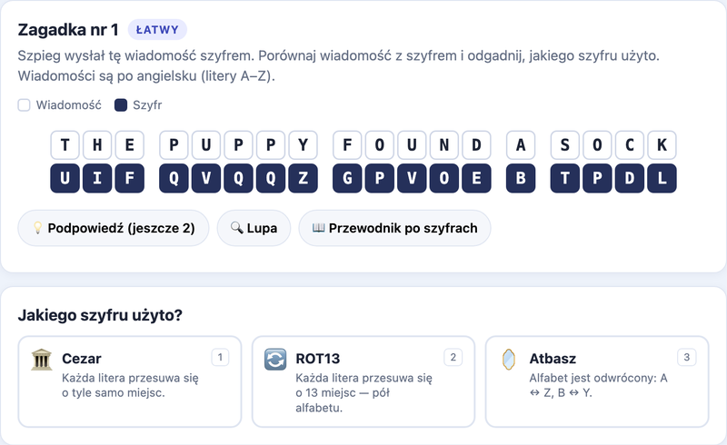

Krzyżówki matematyczne
Krzyżówki z działaniami do wydruku: każde równanie czyta się w poziomie i w pionie, a liczby łączą się na skrzyżowaniach. Wybierasz zakres liczb i działania, dostajesz kartę pracy razem z rozwiązaniem.

Krzyżówki z działaniami do wydruku: każde równanie czyta się w poziomie i w pionie, a liczby łączą się na skrzyżowaniach. Wybierasz zakres liczb i działania, dostajesz kartę pracy razem z rozwiązaniem.

Szpieg wysłał wiadomość szyfrem. Porównaj ją z zaszyfrowaną wersją i odgadnij, jakiego szyfru użył: Cezara, ROT13, Atbasz, a na trudnym poziomie także Vigenère'a, afinicznego i Beauforta. Dla dzieci w wieku 8–12 lat.
Wszystko tu jest za darmo i nie trzeba zakładać konta. Tak już zostanie.